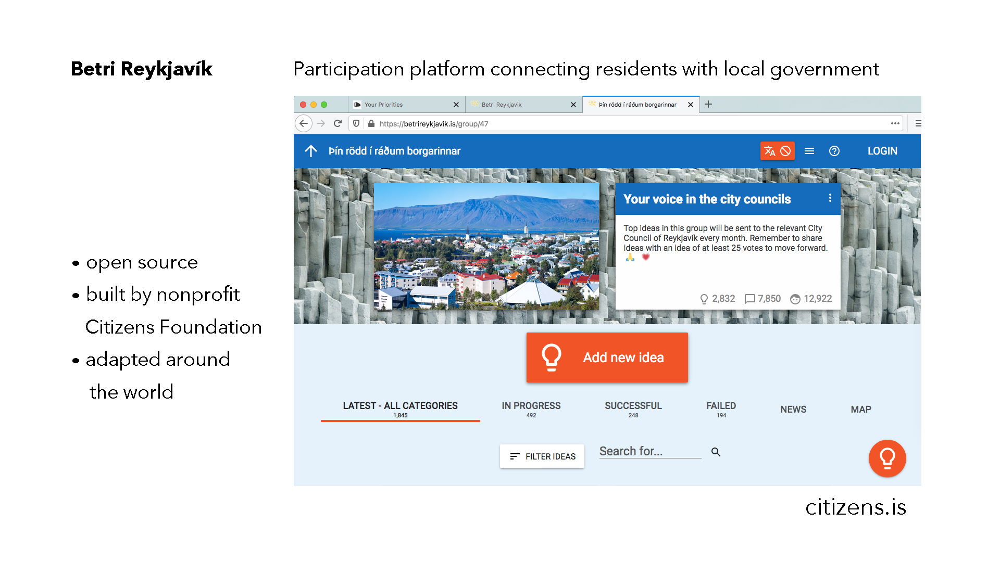
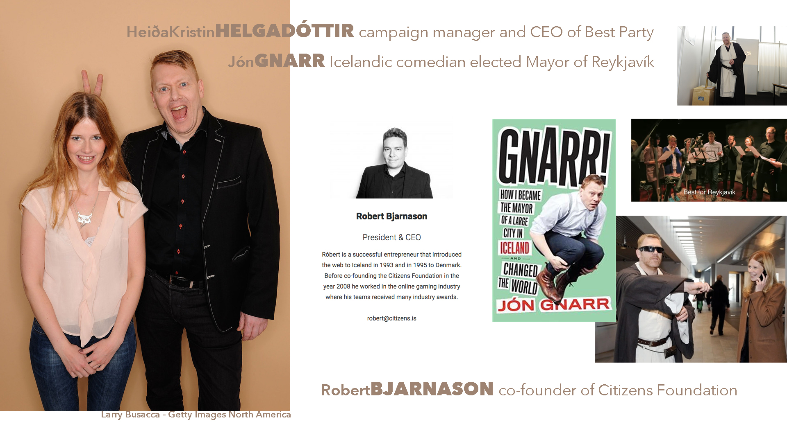
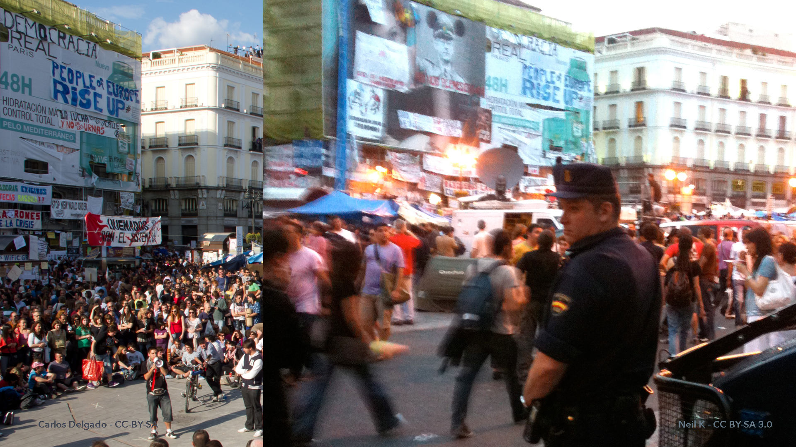
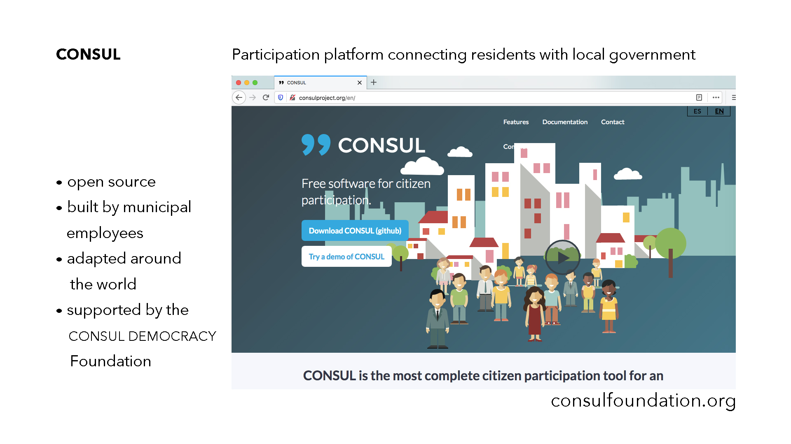
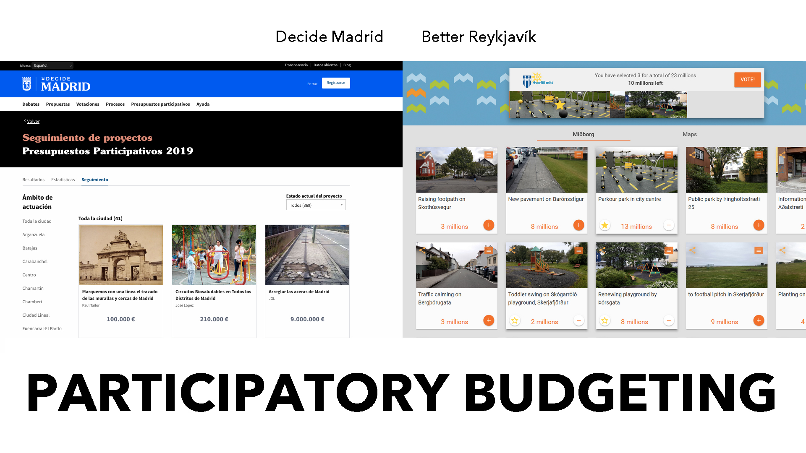
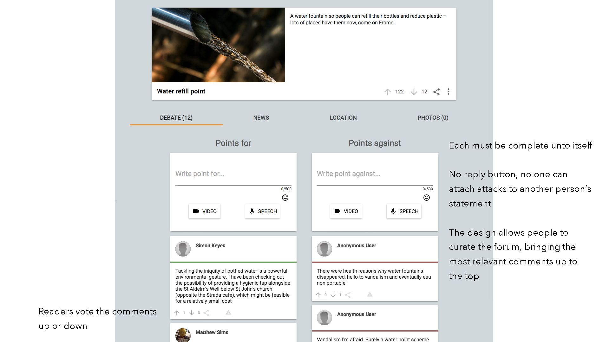

Participating in Public: Municipal Software for Online Dialogue and Decision-Making

I wrote a novel about software developers and included a government website called Decide Portland. This is set around twenty years from now, but that website isn’t really science fiction. I based it on open source software created by employees of the City of Madrid. Anyone in the city can use Decide Madrid to debate what they want to see happen in their neighborhoods, to draft proposals, read and comment on the city’s own draft legislation, and to allocate one hundred million euros each year toward projects throughout Madrid. And any government can adapt that software.

We’ll learn how this process came to be, how the platform works, the challenges encountered in its use, and the solutions being explored. We’ll also discover how a large group of people arrive at a common understanding online and provide qualitative data for policymakers. Many here will already be familiar with government websites but we’ll look specifically at the ways people connect with decision-makers in three countries: Iceland, Spain, and Taiwan. They all use software for public engagement, in each country, a government official upon election and from within the administration catalyzed its use. This journey through the development of digital tools for democracy will give us an idea how participatory political processes might be introduced to local and state governments in the US.
First, we go to Iceland. The year is 2008.

A cozy elite crashed the banks and the depression severed people’s trust in institutional leaders. To help during the crisis, an internet entrepreneur who’d left Reykjavík to work in the UK video game industry returned home. Róbert Bjarnason and friends created an online platform for all the parties in parliament to post their proposed laws and for citizens to comment on them and to post their own. It was called Shadow Parliament.
The city of Reykjavík is near parliament and a popular comedian talked his friends into running a satiric political party for the municipal elections. Jón Gnarr had everyone’s attention and the campaign became the subject of documentary film.
But he had no experience with public administration. Gnarr later went on the record saying he hadn't even paid attention to local politics before running for mayor. And so when Bjarnason launched a website for people to make proposals for what they wanted to see happen in the city, Gnarr asked everyone to contribute and they were very active on that platform.

Unlike politicians who declare missions and plans, Gnarr had no policy, no real party, the Best Party was just a bunch of creative people (and political scientist Heiða Kristin Helgadóttir). They said write us your policy and we'll use that—and then they won the election. With Jón Gnarr the mayor, October 2011, the city integrated the participation platform into a formal process for people to communicate with government. Each month the most discussed issues were taken up by the city council.
And even after the Best Party's term ended and Gnarr left politics, the software and participatory process is still in use and supported by Citizens Foundation, a nonprofit co-founded by Bjarnason.

The Best Party inspired people. Other people in Europe undergoing crisis, many admired how Reykjavík replaced a corrupt class of politicians. They saw the potential for real democracy.
In 2011, almost five million people were without work in Spain, with youth unemployment at forty-three percent. The public bailout of the banks and cuts to social programs. Austerity. Corruption. Crisis. The authorities told a group of protesters in Madrid to leave the public square. The protest had been declared illegal. And people surprised them, they filled the plazas. The day Madrid showed up, May 15th 2011, many months before Occupy Wall Street. The prolonged protests became known for that day, 15-M.

At first, this wasn’t about occupying an office. And even now, looking back at the spread of Occupy throughout the world, that was only a beginning. The organizers of protests see people turn up and eventually even the most dedicated leave. The protests ends. And more effort appears to have gone toward protesting than attaining a seat of authority where policy will be written. Some might say the political process is corrupt and to participate is only to legitimize it, but protesters in Spain organized themselves. They began to understand electoral politics was only another game. They could play it.
The 15-M movement evolved into new political parties. Foremost among them, Podemos, formed a coalition with other political parties under the name Ahora Madrid. And they promised to create a website to facilitate public participation with city hall. Their candidate for mayor promoted this and after winning office in 2015, Mayor Manuela Carmena ensured the financial, political, and managerial support to develop and run the platform.
It wasn’t required by law, the city council decided that the results of polls and participatory budgets were binding, and the adoption of these results was only ensured by the Mayor’s Office.
When their candidates won, the things that had been so hard to advance suddenly happened fast inside government. Decide Madrid. The platform had a social movement behind it. Another member of Ahora Madrid, a software developer elected to city council, Pablo Soto, helped create the software.

Now available at consulproject.org, the platform has since been adapted by more than a hundred governments in thirty-three countries. This is free and open source. It’s possible to imagine a group of civic-minded volunteers anywhere in the world could set this up in their own city, but the success of this software depends upon a commitment within government to involve the public. It depends upon public servants to enable it and engage with people. A culture of civic involvement. A will to share power, to work together, to decide together: a desire for democracy.
In both Madrid and Rekjavík, the software for open engagement became integrated to official political processes when enlightened outsiders who valued public participation entered elected office.
Róbert Bjarnason of Citizens Foundation in Iceland consulted with the City of Madrid about technical issues at the beginning of the initiative. And both Better Reykjavík and Decide Madrid have some similarities. Each city facilitates a participatory budgeting process online.

Some of the discretionary budget that previously would’ve been allotted by politicians, now draws from the collective desires of people in the city. In Madrid, almost all participatory activities can also be done offline in any of twenty-six city offices. The proposals, comments, votes, all of these data can be thought of as items that a platform displays. Both platforms list the items, and when the process calls for it, they aggregate votes. These are the things. Yes or no. These platforms don’t support a complex deliberative process. The technology alone doesn’t provide the structure for a large group of people to think through a complex issue together. The websites created in Madrid and Reykjavík have some interactive features and as in life, some challenges.
1.) Trolling, 2.) Information overload, 3.) Thresholds for reaching the council, 4.) Proposals stuck in committee, and 5.) Demands on resources and time.
Trolls
The Icelandic developers scuttled their trolls by design. People may have complex feelings about a project, although, even if it is nuanced, people must sort their comments into either pro or con. The comments appear in two columns, side by side on desktop, and for the small screen, a single column alternates pro and con.

Readers vote the comments up or down. Each must be complete unto itself to make any sense. This short circuits the ability to attach attacks to another person’s statement and the design allows people to curate the forum, bringing the most relevant comments up to the top for other people encountering the project.
And to increase access to the platform on smartphones, people can use speech-to-text. You can even click a button on the page to record a brief audio or video.
Information Overload
And this leads to another challenge, one that could be considered a luxury problem, but one that a city with a much larger population like Madrid encounters. The sheer number of proposals submitted in a city of three million people just buries them. It would be unusual for someone to read a thousand proposals. And even if people can vote proposals up or down, in theory surfacing the worthy ideas, it is still very unlikely for an individual to read hundreds of proposals and so those that have reached the top tend to get read first. They have search filters to select for the most recent, the most popular, the most debated proposals, or to select them at random. Imagine someone is really into it and after reading a hundred proposals, they’re done. They did good. But nine hundred proposals were never seen.
For more information:
vTaiwan is run by citizens, written in English, and maintained by g0v, a decentralized civic tech community from Taiwan. Join is a national platform for online participation run and maintained by the government—to check it out, Google Chrome can translate pages from Join.
Decide Madrid built their platform with Consul software:
This is How People Power Wins an Election, The Story of Ahora Madrid